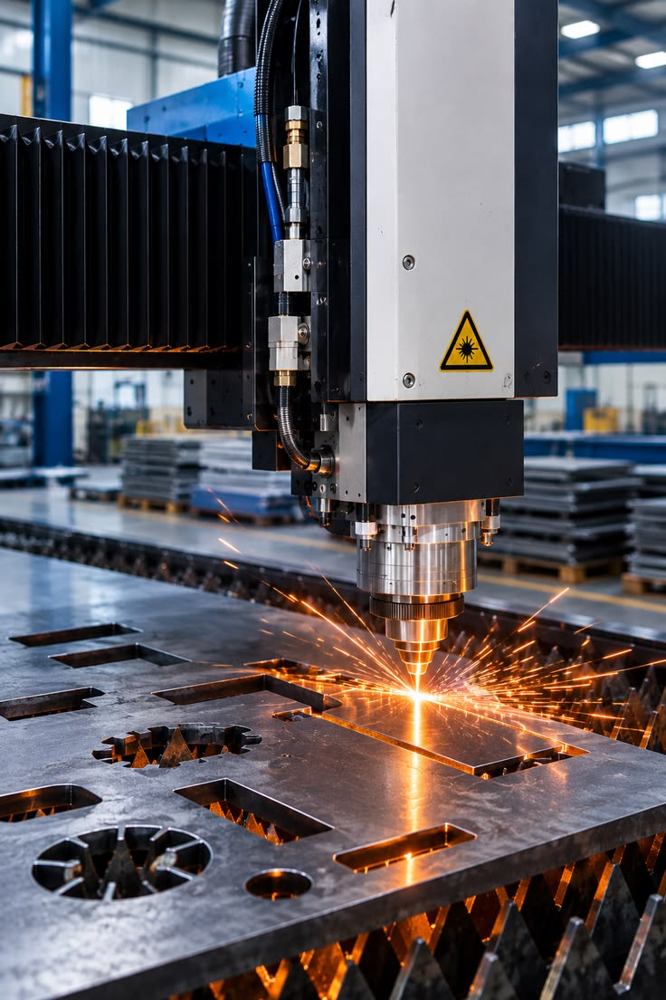
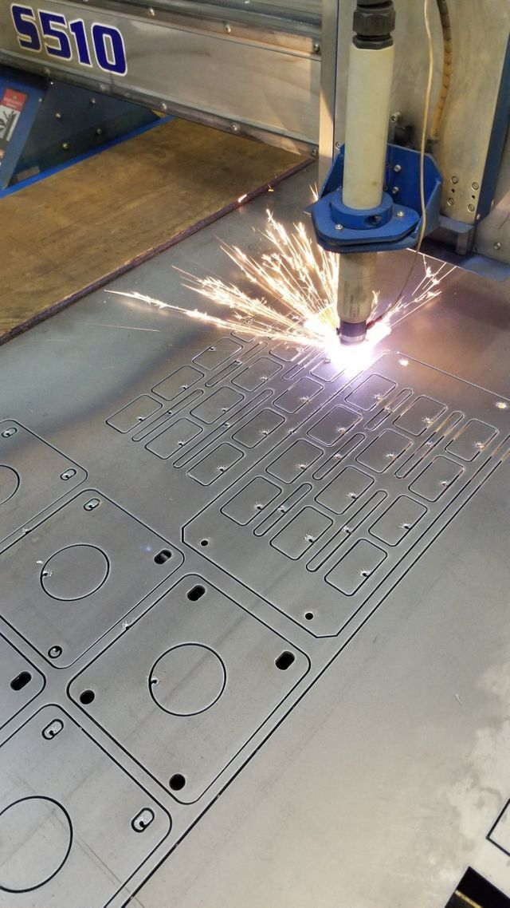
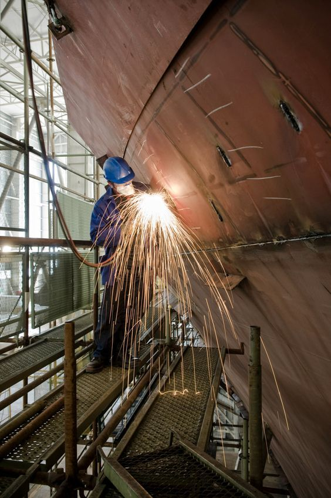
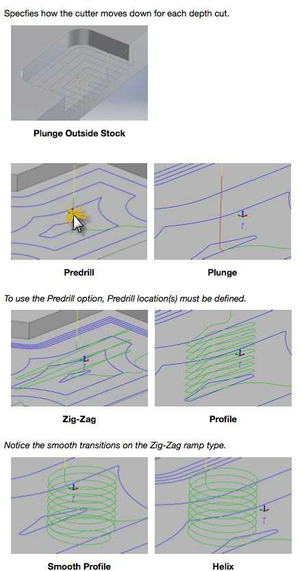
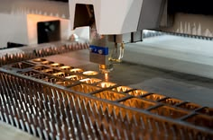
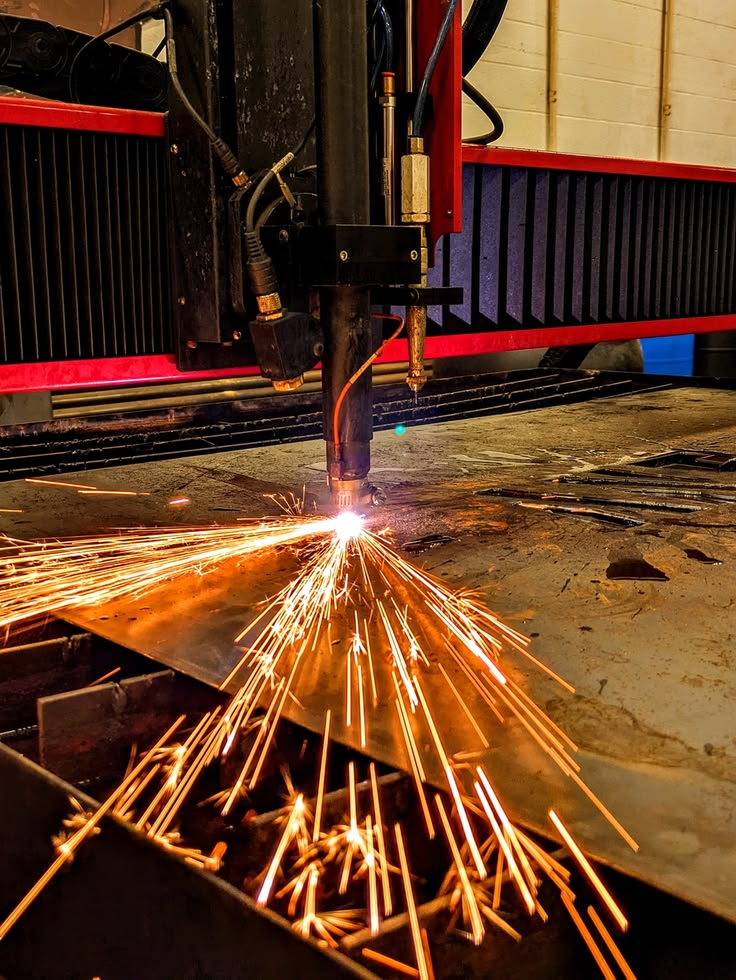

一、几何基础与算法流程
1.1 图形为什么需要清洗
设计文件中的线条主要用于表达工程意图，但计算机套料要求轮廓具有严格的拓扑关系。两个端点相差 0.05 毫米，人眼可能看不出问题，算法却可能把轮廓判断为未闭合。
常见问题包括重复线、断线、自相交、微小短边、圆弧方向错误、重叠孔和比例错误。几何清洗通常包括端点吸附、重复元素删除、短边合并、闭合检查和自相交修复。
系统还要区分外轮廓和内孔。常用方法是计算轮廓方向、包含关系和面积。若轮廓 A 完全包含轮廓 B，B 可能是 A 的内孔；如果 B 内部又包含 C，C 可能重新成为实体区域。
1.2 No-Fit Polygon

No-Fit Polygon，简称 NFP，可翻译为不可行域边界。固定零件 A，让零件 B 围绕 A 移动。当 B 刚好接触 A 且不发生重叠时，B 参考点形成的轨迹就是 NFP 边界。
如果 B 的参考点位于 NFP 内部，两个零件会重叠；位于边界上时，两个零件刚好接触；位于外部时，两个零件分离。
NFP 能够把复杂的「两个不规则图形是否碰撞」问题，转化为「一个点是否位于某个区域」的问题。它适合用于寻找紧密贴合位置和内孔嵌套位置。
NFP 的计算难点包括曲线离散精度、凹多边形处理、内孔关系和大量零件组合。项目可以采用轮廓简化、凸分解、结果缓存和 GPU 并行提高速度。
1.3 候选位置
连续平面上存在无穷多个摆放位置。算法需要从中提取有限的有意义位置，例如：钢板左下角；已放零件的顶点；NFP 边界的拐点；凹槽内部可放置点；内孔嵌套位置；与其他零件共边的位置。
候选位置策略决定搜索效率。如果候选位置过少，算法可能错过高质量方案；候选位置过多，计算时间会大幅增加。
1.4 初始解
初始解是优化的起点。常见流程是先将零件按面积、最长边、外接矩形或形状复杂度排序，再逐件放入当前最合适的位置。
Bottom-left 方法优先选择最靠下、再最靠左的位置。该方法速度快，容易留下狭长空隙。船舶套料可以增加「最小包络面积」「最大接触长度」「最小新增废料」等评分。
某一候选位置的评分可以写为：
\[ Score=a_1\Delta A+a_2H+a_3G-a_4L_{contact} \]
其中：\(\Delta A\) 为新增占用面积；\(H\) 为当前排样高度；\(G\) 为产生的狭小间隙；\(L_{contact}\) 为与板边或其他零件的接触长度。评分越低，候选位置越优。
1.5 遗传算法
遗传算法把一套零件排序和摆放策略编码成「染色体」。多个候选方案组成种群，通过选择、交叉和变异产生新方案。
适应度函数可以综合材料、时间和热风险。质量较高的方案更容易保留，部分排序片段在交叉过程中组合，变异则随机交换零件顺序或角度。
遗传算法适合大范围搜索，但每次适应度评价都需要完成几何排布，计算成本较高。工业系统通常将其与快速启发式排布器结合。
1.6 模拟退火
模拟退火从一个方案出发，通过移动、交换或旋转零件产生邻域方案。新方案更好时直接接受；新方案略差时，也可能按照一定概率接受。
接受较差方案有助于跳出局部最优。随着「温度」降低，算法逐渐减少接受较差方案的概率，最终趋于稳定。接受概率常写为：
\[ P=\exp\left(-\frac{\Delta F}{T}\right) \]
其中 \(\Delta F\) 是目标函数变差量，\(T\) 是温度。
1.7 大邻域搜索
大邻域搜索每次从方案中移除一批零件，再采用新的策略重新插入。例如，从利用率最低的钢板移除 30 个零件，尝试将它们放入其他钢板的空隙和内孔。
这种方法很适合船舶套料，因为局部移动一个大零件往往很困难，批量移除和重新插入更容易突破现有结构。
1.8 多阶段混合算法
推荐的工程算法结构为：
规则分类 → 启发式生成多个初始解 → 遗传算法或大邻域搜索改善钢板数量 → 局部几何优化提高紧密度 → 工艺规则修正 → 路径优化 → 人工交互复核
算法需要支持人工锁定。工艺人员可以固定重要零件、禁止某种角度或保留某个方案，系统只优化剩余部分。这种人机协同方式更适合工业现场。
二、工艺编制与制造可执行性
2.1 内孔优先原则

零件仍与母板连接时结构稳定，适合先切内孔。若先切外轮廓，零件可能发生位移、翘曲或倾斜，随后加工内孔时尺寸精度和安全性会下降。
因此，常见顺序为：标记和划线 → 小内孔 → 大内孔 → 内部开口 → 坡口 → 外轮廓 → 桥接点处理。顺序仍需根据设备和零件结构调整。
2.2 割缝补偿
切割束会去除一定宽度的材料。假设割缝宽度为 4 毫米，若切割轨迹直接沿理论轮廓中心运行，外轮廓零件尺寸会缩小约 2 毫米。
因此，外轮廓轨迹通常向外偏置半个割缝宽度，内孔轨迹向孔内部偏置。坡口切割还要考虑刀具角度引起的上下表面轮廓差异。
割缝宽度并非常数，它会受到板厚、材料、速度、功率、喷嘴、气体和设备状态影响。系统应维护工艺参数表，并允许通过试切结果校准。
2.3 引入和引出
切割开始时需要穿孔，穿孔区域可能产生熔渣和烧伤。引入线把穿孔点放在零件轮廓之外，再逐渐进入正式轮廓。
引入点选择需要避开：装配基准面；高精度边；坡口交界；狭窄区域；相邻零件；夹具和板边。引出线用于平稳结束切割，但某些设备和材料可能不需要明显引出。规则应根据工艺数据库配置。
2.4 共边切割
当两个零件具有可共享的直线边时，可以只切一次。若共享边长度为 2 米，理论上可减少约 2 米有效切割。
同时，共边会让两个零件受到同一条切割轨迹的尺寸和热影响。以下情况可能不适合共边：两个零件材质或质量等级不同；一侧需要坡口；两件具有不同尺寸精度；切割后容易发生相对移动；共边区域热变形风险较大；后续工艺要求保留独立余量。
2.5 桥接
桥接是在零件轮廓上保留少量未切断部分，使零件暂时与母板连接。桥接可以防止小零件掉落、大零件倾覆和切割头碰撞。
桥接数量可以根据零件重量、周长和重心估算。桥接位置还应避开坡口、关键边和后续焊接面。桥接会增加后续打磨成本，因此目标函数可以增加：
\[ C_b=N_b c_b \]
其中 \(N_b\) 为桥接数量，\(c_b\) 为单个桥接的去除和打磨成本。
2.6 热变形控制

连续切割相邻区域会造成热量集中。板材局部膨胀和收缩后，可能出现翘曲、尺寸偏差和割缝闭合。软件可以采用以下策略：跳跃切割，分散连续热输入；先切小孔，再切大轮廓；对称切割；在相邻零件之间交替加工；限制同一区域单位时间内的切割长度；对长条零件保留临时桥接；根据温度或历史数据调整等待时间。
热风险可以用简化指标估计：
\[ H=\sum_{a,b}\frac{L_aL_b}{d_{ab}+\varepsilon}\exp\left(-\frac{|t_a-t_b|}{\tau}\right) \]
相邻轨迹越长、距离越近、加工时间越接近，热风险越高。该模型属于代理指标，需要用现场变形数据校准。
三、路径规划和设备后处理
3.1 路径规划问题
套料决定零件的位置，路径规划决定切割头如何依次访问这些轮廓。它类似旅行商问题，但还包含内孔优先、工艺优先级和热约束。
总加工时间可以近似表示为：
\[ T=\frac{L_c}{v_c}+\frac{L_t}{v_t}+N_pt_p+N_zt_z+T_{wait} \]
其中：\(L_c\) 为切割长度；\(v_c\) 为切割速度；\(L_t\) 为空行程；\(v_t\) 为空移速度；\(N_p\) 为穿孔次数；\(t_p\) 为单次穿孔时间；\(N_z\) 为抬枪、落枪或工艺切换次数；\(t_z\) 为单次切换时间；\(T_{wait}\) 为冷却和等待时间。如果只减少空行程，却增加大量穿孔，总时间仍可能上升。
3.2 后处理器

后处理器把软件内部的通用轨迹转换为具体设备能够理解的数控代码。不同设备可能使用不同的：指令语法；坐标格式；单位；设备原点；轴定义；坡口头运动方式；穿孔循环；刀具补偿；速度和气体参数；暂停和报警指令。
后处理器错误可能导致轨迹偏移、速度异常、坡口轴超限或设备无法执行。因此，每个后处理器都要经过仿真、空运行、试切和版本管理。
3.3 从「生成 NC」到「稳定加工」


软件能够生成 NC 文件，仅说明格式基本可读。稳定加工还需要满足：轨迹没有越界；轴运动可达；切割头不碰撞；穿孔参数适合板厚；转角速度合理；坡口姿态没有超限；程序暂停和恢复安全；设备实际加工效果满足质量要求。